Module 2.6
Introduction to Spatial Data (Mitch Gritts)
September 2018
Guest presenter: Mitch Gritts (who also pulled this module together!)
Load script for module 2.6
Click here to download the script! Save the script to a convenient folder on your laptop.
Load your script in RStudio. To do this, open RStudio and click on the folder icon in the toolbar at the top and load your script.
Let’s get started with spatial data in R!
The Science of Where
Spatial analysis allows you to solve complex location-oriented problems and better understand where and what is occurring in your world. It goes beyond mere mapping to let you study the characteristics of places and the relationships between them.

Spatial isn’t Special (in R)
Spatial data, just like all other data in R, are combinations of vectors, matrices, and lists. These combinations of data are wrapped into specialized classes, and have many specialized methods to make working with them easier. Most of the functionality comes from the sp package for vector data, and raster package for raster data. In addition to these packages we will use a few other packages:
rgdal- an R wrapper to the open source gdal libraryrgeos- an R wrapper to the open source geos libraryleaflet- an R wrapper to the javascript library ‘leaflet’ for interactive maps
###################
# before starting make sure we have a clean global environment
rm(list = ls())
# load libraries and set working directory
library(dplyr)
library(sp)## Warning: package 'sp' was built under R version 3.5.1library(raster)
library(rgdal)## Warning: package 'rgdal' was built under R version 3.5.1library(rgeos)## Warning: package 'rgeos' was built under R version 3.5.1library(ggthemes)
library(magrittr)
library(leaflet)Check the footnotes for info about some of the warnings 1
Spatial Data
Everything is related to everything else, but near things are more related than distant thingsWaldo Tobler, Tobler’s first law of geography
Remember back to module 1.1 that vectors are a bunch of objects grouped together in an orderly line. Spatial vectors are not the same thing. In a spatial context vector data are points, lines, and polygons. We can also call these geometries. These data strucutures are sets of coordinate pairs (x, y) that can have variables or attribute data associated with them (but not always). Raster data are matrices of cell values. I like to think of rasters a images; in fact satelite images of earth are often the source of raster data.
Points
Points are the simplest spatial data structure to reason about. In this case each coordinate pair is a point. We can attach attribute data to the points. An example of points might be trees in a forest, and the attribute data are height, diameter, species, etc.
Lines
Lines are a bit more complex. They are composed of many vertices that are connected. Each line can have data associated with it. The order of the connections is important. Roads or rivers are great examples, and might have data like width, speed limit, flow as attribute data.
In R lines can be one or more line objects. For instance, the Truckee River and all its tributaries can be a single lines (multi-line) object, composed of many line objects for each of the tributaries.
Polygons
A polygon is a set of closed lines. It is very similar to lines, however the first vertex must also be the last vertex in order to close the polygon. Polygons can have holes in them, think an island in a lake, which is a polygon enclosed inside another polygon. And just like lines, multiple polygon objects can make up a single polygons (multi-polygons) object. For instance, a chain of islands. Each island is a single polygon. Together all the individual island polygons represent the entire island chain polygon (multi-polygon).
I find polygons easier to think about, so in the examples below I will first review points, then polygons, then lines.
Raster
Raster data divides area of interest into a grid to represent continuous (and sometimes discrete) data such as elevation. The grid has equally sized rectangular cells (or pixels) that can have one or more values. The size of the cells refered to as the resolution of the grid, smaller cell sizes are higher resolution. The value of that cell should represent the average value for the area that cell covers. Raster data is often represented by a matrix of the spatial extent we are interested in. So if we have a 1km square area of interest with a 1 meter resoltion we have 1000 x 1000 matrix, each element of that matrix representing the value of a variable for that 1 meter cell.
We will likely not have much time to cover raster data because of our limited time together, and the amount of time loading and working with raster can take. I’ll provide a few short examples at the end to run on your own.
Projections & Coordinate Reference Systems

An important component of all spatial objects is the projection of the data. Projections attempt to map the round/oval shape of the earth onto a flat surface. Without a projection vector data are refered to as geometries. Once the projection is added it is geographic data.

There are several methods to add a projection to sp and raster objects. The underlying structure of a projection string is from the PROJ.4 open source library. These are often refered to as a coordinate reference system (CRS). A common shorthand for creating CRSs is to use an EPSG id2.
Below is a list of common projections:
- WGS84 (EPSG:4326) - Latlong used in GPS systems
- Pseudo-Mercator (EPSG:3857) - Used in web maps
- NAD83 zone 11n (EPSG:26911) - North America metric based, Nevada. Can be used across zone lines, however accuracy suffers, especially further North
- NAD27 zone 11n (EPSG:26711) - Old, replaced by NAD83. Works best within zone lines. Don’t use this, convert old data to NAD83.
- Albers Equal-area Conic (EPSG:102003) - Used by the USGS and US Census
Spatial Objects
You will most likely load spatial data from shapefiles, Google kml or kmz files, or .gpx files. However, I imagine a lot of you are collecting point data in the field and transcribing it into Excel Spreadsheets. These will need to be converted from data.frames to SpatialPointsDataFrames. So below we will create a SpatialPointsDataFrame by hand, and load a SpatialPolygonsDataFrame from a shapefile
Creating Spatial Points Data
Let’s start out by creating a SpatialPoints object.
First, download the following data set and save to your working directory: reptiles.csv
# create spatial points data frame ----
## load reptile data
reptiles <- readr::read_csv('reptiles.csv')
## create a SpatialPoints object
sp_points <- SpatialPoints(
coords = reptiles[, c('x', 'y')]
)
## inspect the SpatialPoints object
str(sp_points)## Formal class 'SpatialPoints' [package "sp"] with 3 slots
## ..@ coords : num [1:60955, 1:2] 581906 581738 581630 581209 581046 ...
## .. ..- attr(*, "dimnames")=List of 2
## .. .. ..$ : NULL
## .. .. ..$ : chr [1:2] "x" "y"
## ..@ bbox : num [1:2, 1:2] 267031 3853330 769527 4702755
## .. ..- attr(*, "dimnames")=List of 2
## .. .. ..$ : chr [1:2] "x" "y"
## .. .. ..$ : chr [1:2] "min" "max"
## ..@ proj4string:Formal class 'CRS' [package "sp"] with 1 slot
## .. .. ..@ projargs: chr NAsp_reptiles contains an object of class SpatialPoints. It doesn’t have any data associated with it, or a projection. Let’s work on giving this data a projection. You will need to know the projection the data is recorded in order to acurately project the data. I know that the data is NAD83 Zone 11.
# add a projection to a spatial object ----
## create a CRS object
utm <- CRS('+init=epsg:26911')
## add the projection to sp_points
sp_points@proj4string <- utm
## inspect SpatialPoints
str(sp_points)## Formal class 'SpatialPoints' [package "sp"] with 3 slots
## ..@ coords : num [1:60955, 1:2] 581906 581738 581630 581209 581046 ...
## .. ..- attr(*, "dimnames")=List of 2
## .. .. ..$ : NULL
## .. .. ..$ : chr [1:2] "x" "y"
## ..@ bbox : num [1:2, 1:2] 267031 3853330 769527 4702755
## .. ..- attr(*, "dimnames")=List of 2
## .. .. ..$ : chr [1:2] "x" "y"
## .. .. ..$ : chr [1:2] "min" "max"
## ..@ proj4string:Formal class 'CRS' [package "sp"] with 1 slot
## .. .. ..@ projargs: chr "+init=epsg:26911 +proj=utm +zone=11 +datum=NAD83 +units=m +no_defs +ellps=GRS80 +towgs84=0,0,0"Nice, the data can now be plotted onto the earth! But first, lets add some data (attributes) to these points with the SpatialPointsDataFrame function
# add data to sp_points ----
spdf_points <- SpatialPointsDataFrame(coords = sp_points, data = reptiles)## inspect the data
str(spdf_points)Now we have a SpatialPointsDataFrame! And just like data.frames we can use indexing to subset the data. Check the data in the @data slot. One of the columns is species. Lets use this column to subset the data frame for only desert horned lizards (**Phrynosoma platyrhinos*).
# subset a SpatialPointsDataFrame ----
## first, inspect the data in the @data slo
head(spdf_points@data)## # A tibble: 6 x 8
## x y species date total label year month
## <dbl> <dbl> <chr> <date> <int> <chr> <int> <chr>
## 1 581906 4015885 Crotaphytus b~ 2015-04-03 4 Ivanpah-Pahr~ 2015 Apr
## 2 581738 4015674 Sauromalus at~ 2015-04-03 1 Ivanpah-Pahr~ 2015 Apr
## 3 581630 4015679 Sauromalus at~ 2015-04-03 3 Ivanpah-Pahr~ 2015 Apr
## 4 581209 4016290 Sauromalus at~ 2015-04-03 1 Ivanpah-Pahr~ 2015 Apr
## 5 581046 4015795 Sauromalus at~ 2015-04-03 1 Ivanpah-Pahr~ 2015 Apr
## 6 408859 4369481 Crotaphytus b~ 2010-06-30 1 Dixie Valley 2010 Jun## great, it looks just like a data.frame
## lets look at the species column, I'll only return the first 10
spdf_points@data$species[1:10]## [1] "Crotaphytus bicinctores" "Sauromalus ater"
## [3] "Sauromalus ater" "Sauromalus ater"
## [5] "Sauromalus ater" "Crotaphytus bicinctores"
## [7] "Phrynosoma platyrhinos" "Phrynosoma platyrhinos"
## [9] "Gambelia wislizenii" "Crotaphytus bicinctores"## another way to do this
spdf_points$species[1:10]## [1] "Crotaphytus bicinctores" "Sauromalus ater"
## [3] "Sauromalus ater" "Sauromalus ater"
## [5] "Sauromalus ater" "Crotaphytus bicinctores"
## [7] "Phrynosoma platyrhinos" "Phrynosoma platyrhinos"
## [9] "Gambelia wislizenii" "Crotaphytus bicinctores"## or, another method
spdf_points@data[1:10, 'species']## # A tibble: 10 x 1
## species
## <chr>
## 1 Crotaphytus bicinctores
## 2 Sauromalus ater
## 3 Sauromalus ater
## 4 Sauromalus ater
## 5 Sauromalus ater
## 6 Crotaphytus bicinctores
## 7 Phrynosoma platyrhinos
## 8 Phrynosoma platyrhinos
## 9 Gambelia wislizenii
## 10 Crotaphytus bicinctores## cool, this thing behaves just like a data frame. Lets subset it.
## create a variable to hold our species of interest
phpl <- 'Phrynosoma platyrhinos'
## then subset the data...
phpl_spdf <- spdf_points[spdf_points$species == phpl, ]
## check to see that there is only one species in the data.frame
phpl_spdf %>% magrittr::extract2('species') %>% unique()## [1] "Phrynosoma platyrhinos"We can use any of the operation for a data.frame to work with a SpatialPointsDataFrame.
One more thing before we move on – we can create a SpatialPointsDataFrame in one step, skipping the creation of a SpatialPoints object.
# one step to create a SpatialPointsDataFrame ----
spdf1 <- SpatialPointsDataFrame(
coords = reptiles[, c('x', 'y')],
data = reptiles,
proj4string = utm
)
# str(spdf1, max.level = 2)
## and lets clean up the global env
rm(phpl_spdf, reptiles, sp_points, spdf1, phpl)ASIDE: Slots
Look carefully at the structure of an sp data. You will notice there are @ signs used to separate different attributes or properties of data within an sp class. These are called slots. They are a special attribute to certain data types in R. You can think of the @ like the $ for data.frames. They are just ways to organize, set, and get certain bits of data out of classes.
Loading SpatialPolygons
It is possible to create polygons from scratch in R. It takes a bit of work, and I’ll provide an example later for reference. Most of the time you will not need to do this. Instead you will likely load data from a shapefile. In the code example below we are going to load county polygons for the state of Nevada. Like everything in R there are multiple methods to read shapefiles. The easiest method I’ve seen is to use the raster::shapefile function.
NOTE: for the next examples you will need to use GIS files that are stored in the following compressed data directory: GIS data for module 2.6. If you want to follow along, please download this file and unzip it in your working directory. Make sure the folder called “data” (that contains subdirectories called “nv_counties” and “roads”) is in now in your working directory.
#############
# Nevada Counties example...
# read in nv county shapefile ----
counties <- shapefile('data/nv_counties/NV_Admin_Counties.shp')
## once finished check the structure
# str(counties, max.level = 3)
## some data management
### check the proj4string
counties@proj4string## CRS arguments:
## +proj=utm +zone=11 +datum=NAD83 +units=m +no_defs +ellps=GRS80
## +towgs84=0,0,0### this proj4string, while encoding the same projection isn't identical to
### the proj4string of spdf_points
spdf_points@proj4string## CRS arguments:
## +init=epsg:26911 +proj=utm +zone=11 +datum=NAD83 +units=m +no_defs
## +ellps=GRS80 +towgs84=0,0,0identicalCRS(counties, spdf_points)## [1] FALSE### let's coerce the points to our desired CRS, utm
### this will throw a warning because we counties already has a projection
### and we are forcing a new (albeit same) projection onto it. This isn't
### the same as reprojecting, which we will get to later
proj4string(counties) <- utm## Warning in `proj4string<-`(`*tmp*`, value = new("CRS", projargs = "+init=epsg:26911 +proj=utm +zone=11 +datum=NAD83 +units=m +no_defs +ellps=GRS80 +towgs84=0,0,0")): A new CRS was assigned to an object with an existing CRS:
## +proj=utm +zone=11 +datum=NAD83 +units=m +no_defs +ellps=GRS80 +towgs84=0,0,0
## without reprojecting.
## For reprojection, use function spTransformA little more complex than the points data. Instead of a @coords slot there is a @polygons slot. This contains the shape information for each polygon that makes up the state. Check the structure of a polygon. For more information about the structure of SpatialPolygons and SpatialPolygonsDataFrames check here.
## check structure of a polygon within a SpatialPolygonsDataFrame
str(counties@polygons[[1]])## Formal class 'Polygons' [package "sp"] with 5 slots
## ..@ Polygons :List of 1
## .. ..$ :Formal class 'Polygon' [package "sp"] with 5 slots
## .. .. .. ..@ labpt : num [1:2] 274798 4503915
## .. .. .. ..@ area : num 1.7e+10
## .. .. .. ..@ hole : logi FALSE
## .. .. .. ..@ ringDir: int 1
## .. .. .. ..@ coords : num [1:1486, 1:2] 307493 307395 307254 307197 307152 ...
## ..@ plotOrder: int 1
## ..@ labpt : num [1:2] 274798 4503915
## ..@ ID : chr "0"
## ..@ area : num 1.7e+10Lets quickly plot this data to see what it looks like. We don’t have to do anything special to plot spatial data in R. Just like a plotting data from a data.frame, except we don’t have to specify an x & y value because spatial classes already know where to find the x & y values.
## plot a spatial polygon
plot(counties, col = 'springgreen', border = 'purple', lwd = 3)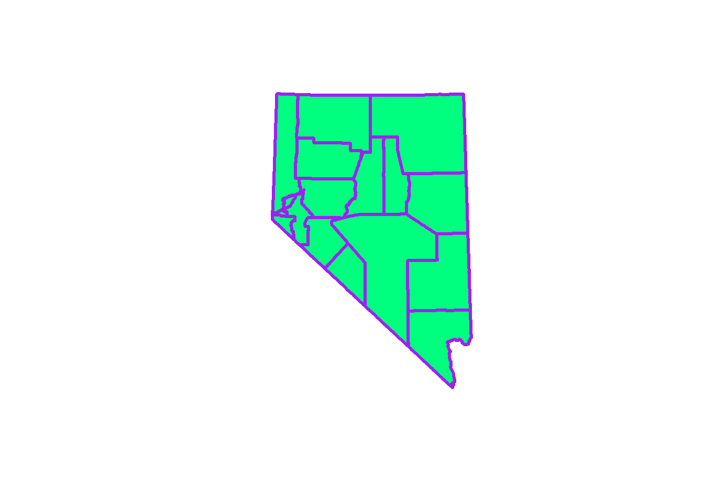
## we can plot certain polygons...
layout(matrix(1:3, ncol = 3, nrow = 1))
plot(counties[1, ])
plot(counties[1:4, ])
plot(counties[counties$CNTYNAME == 'Clark', ])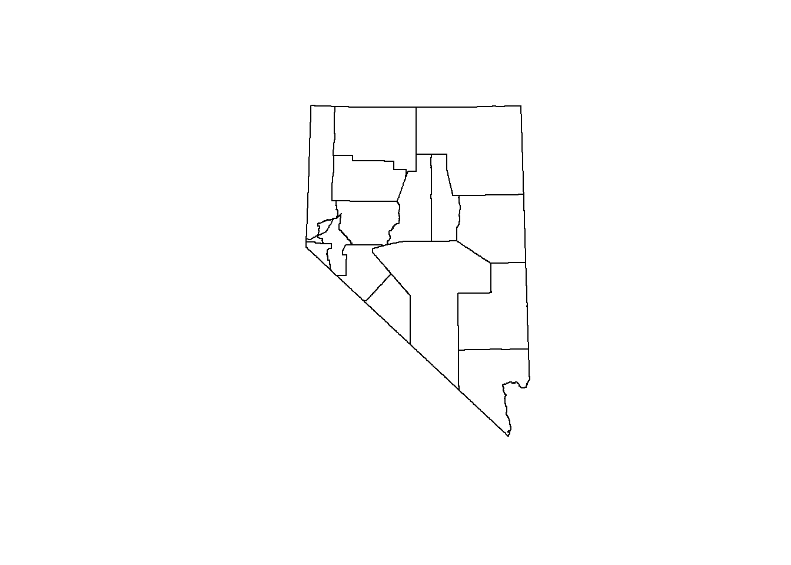
## we can even plot our reptile points ontop of the counties
layout(matrix(1))
plot(counties)
points(spdf_points, pch = 1, cex = .5, col = 'purple')
GIS Operations
Spatial Joins
Spatial joins are executed by using the over (or %over%) function from the sp library. The behavior of over depends on the types of data used. However the basic question when we are running an spatial join with over is: For each item in the first geometry, where does item intersect the second geometry.
# Spatial joins ----
## use the %over% funcstion, which is the same as over(spdf_points, counties)
rslt <- spdf_points %over% counties
## what does rslt look like?
str(rslt)## 'data.frame': 60955 obs. of 6 variables:
## $ ST : chr "NV" "NV" "NV" "NV" ...
## $ CNTYNAME : chr "Nye" "Nye" "Nye" "Nye" ...
## $ COV_NAME : chr "NYE" "NYE" "NYE" "NYE" ...
## $ STATEPLANE: chr "4626" "4626" "4626" "4626" ...
## $ STATEPLA_1: chr "Central Zone" "Central Zone" "Central Zone" "Central Zone" ...
## $ Acres : num 11613744 11613744 11613744 11613744 11613744 ...rslt is an data.frame with 60,955 observations of 6 variables. If you look at spdf_points we see that there are 60,955 elements. If you look at counties@data you will see that there are 6 variables. To reiterate over has taken each point in our first geometry, spdf_points, and looked at the polygons in counties to see which polygon that point lies within, then created a row of a new data.frame of the polygon data.
We can bind this new rslt object with the data in spdf_points. Lets only use the county name though.
## bind data in rslt to spdf_points
spdf_points$county <- rslt$CNTYNAME
## remember back to one of our plot above that some points
## fall outside nevada
plot(counties)
points(spdf_points, col = 'purple')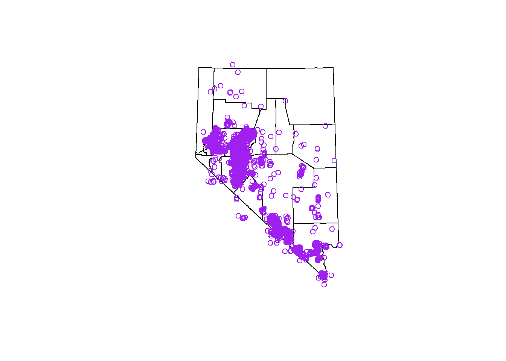
## lets remove those from our dataset, as we shouldn't have any collections
## outside nevada and these are data entry mistakes
spdf_points <- spdf_points[!(is.na(spdf_points$county)), ]
## now lets plot, for fun
plot(counties)
points(spdf_points[spdf_points$county == 'Clark', ], col = 'springgreen', cex = .5)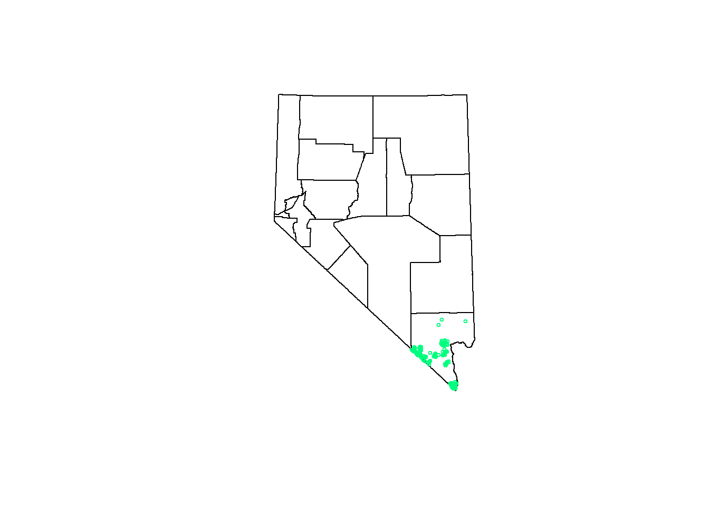
Challenge: Subset Spatial
You’ve seen how to subset both SpatialPointsDataFrames, and SpatialPolygonsDataFrames. Continue practicing subsetting on your own.
Merge Polygons
We can do the same thing with two polygon geometries.
# create a study grid ----
bb <- counties@bbox
## this code is used to create a SpatialPolygonsDataFrame grid
## it isn't important that you understand it right now
grd <- GridTopology(
cellcentre.offset = c(bb[1, 1] + 50000, bb[2, 1]),
cellsize = c(150000, 150000),
cells.dim = c(4, 6)
)
p_grd <- SpatialPolygonsDataFrame(
Sr = as.SpatialPolygons.GridTopology(grd),
data = data.frame('study_area' = 1:24),
match.ID = F)
proj4string(p_grd) <- utm
## plot the grid and counties
layout(matrix(1:2, nrow = 1, ncol = 2))
plot(p_grd)
text(coordinates(p_grd), label = row.names(p_grd))
plot(counties)
text(coordinates(counties), label = counties$CNTYNAME, cex = .75)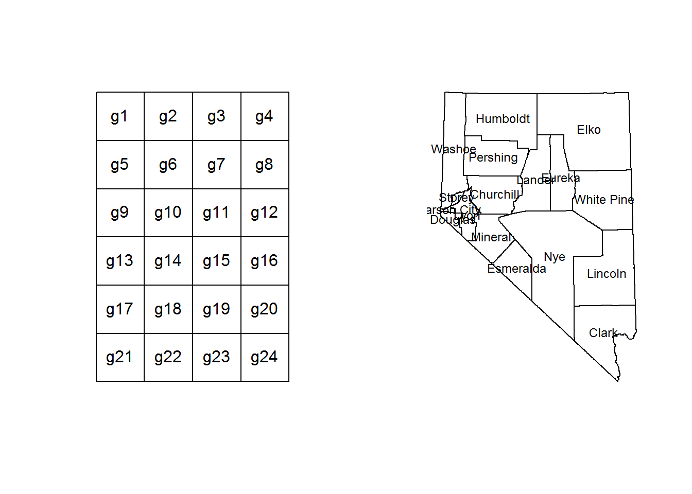
Our goal is to attempt to intersect the two of the geometries together and try to create a new set of polygons. These new polygons will be a mash up of our two starting geometries. It’ll make more sense as we work through the example. Instead of using the over command we will use the gIntersection command. We could also run this example using raster::intersect. But for now, do the following:
# intersect 2 polygon geometries ----
## a little data management to make the intersection easier
row.names(counties) <- counties$COV_NAME
## intersect the geometries
intersect <- gIntersection(counties, p_grd, byid = T)
## plot the result, color to show that they are separate
plot(intersect, col = blues9)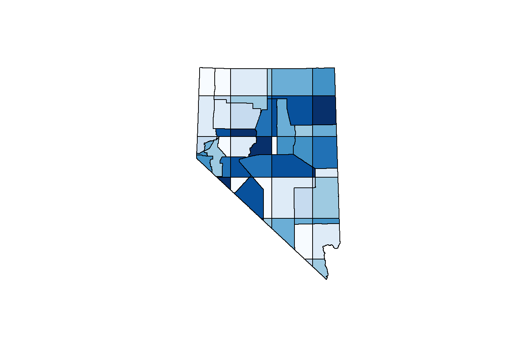
## check the structure
str(intersect, max.level = 2)## Formal class 'SpatialPolygons' [package "sp"] with 4 slots
## ..@ polygons :List of 58
## ..@ plotOrder : int [1:58] 38 5 49 11 35 25 8 56 21 53 ...
## ..@ bbox : num [1:2, 1:2] 240110 3875834 765544 4653630
## .. ..- attr(*, "dimnames")=List of 2
## ..@ proj4string:Formal class 'CRS' [package "sp"] with 1 slotYou’ll notice that now we have 58 polygons. There isn’t any data associated with these polygons. That was all dropped as a result of the gIntersect operation, which is slightly annoying, but we can fix that.
Note: many functions from rgeos will drop the data.frame from the result. If you supply the parameter byid = T to the function, you will be able to get the attribute data from either geometry
# getting our data back from the intersection ----
## check the row.names of these polygons
row.names(intersect)## [1] "WASHOE g1" "WASHOE g5" "WASHOE g9" "ELKO g2"
## [5] "ELKO g3" "ELKO g4" "ELKO g6" "ELKO g7"
## [9] "ELKO g8" "HUMBOLDT g1" "HUMBOLDT g2" "HUMBOLDT g5"
## [13] "HUMBOLDT g6" "EUREKA g7" "EUREKA g11" "LANDER g6"
## [17] "LANDER g7" "LANDER g10" "LANDER g11" "PERSHING g5"
## [21] "PERSHING g6" "WHITE_PINE g7" "WHITE_PINE g8" "WHITE_PINE g11"
## [25] "WHITE_PINE g12" "CHURCHILL g5" "CHURCHILL g6" "CHURCHILL g9"
## [29] "CHURCHILL g10" "LYON g5" "LYON g9" "STOREY g9"
## [33] "CARSON g9" "NYE g10" "NYE g11" "NYE g12"
## [37] "NYE g14" "NYE g15" "NYE g16" "NYE g18"
## [41] "NYE g19" "DOUGLAS g9" "MINERAL g9" "MINERAL g10"
## [45] "MINERAL g13" "MINERAL g14" "LINCOLN g12" "LINCOLN g15"
## [49] "LINCOLN g16" "LINCOLN g19" "LINCOLN g20" "ESMERALDA g10"
## [53] "ESMERALDA g14" "ESMERALDA g18" "CLARK g19" "CLARK g20"
## [57] "CLARK g23" "CLARK g24"## these appear to be a concat of the first geometries row.names, and
## the second geometries row.names. We can work with that to get our data
## strsplit returns a list
tmp <- strsplit(row.names(intersect), split = ' ')
## iterate over the list to get either the 1st or 2nd element
county_name <- sapply(tmp, '[[', 1)
study_area <- sapply(tmp, '[[', 2)
## now we now which county and study area each polygon belongs to
## store this data in a data.frame
df_names <- data.frame(county_name = county_name, study_area = study_area, row.names = row.names(intersect))
## let's add the area of each polygon to this data.frame
## remember that the area for each polygon is stored
## with each Polygon object, and is in square meters
## below we will get the area and convert it to square kilometers
intersect@polygons[[1]]@area / 1e6## [1] 5766.362## lets iterate over the object to get this data
parea <- sapply(seq_along(intersect), function (i) intersect@polygons[[i]]@area / 1e6)
df_names$area <- parea
## finally, create a SpatialPolygonsDataFrame
new_polys <- SpatialPolygonsDataFrame(Sr = intersect, data = df_names)
## and just for completions sake... plot it
layout(matrix(1:3, nrow = 1, ncol = 3))
### plot colored by county
plot(new_polys, col = ggthemes::gdocs_pal()(17)[new_polys$county_name])
### plot colored by study area
plot(new_polys, col = ggthemes::gdocs_pal()(20)[new_polys$study_area])
### plot differentiating each polygon
plot(new_polys, col = blues9)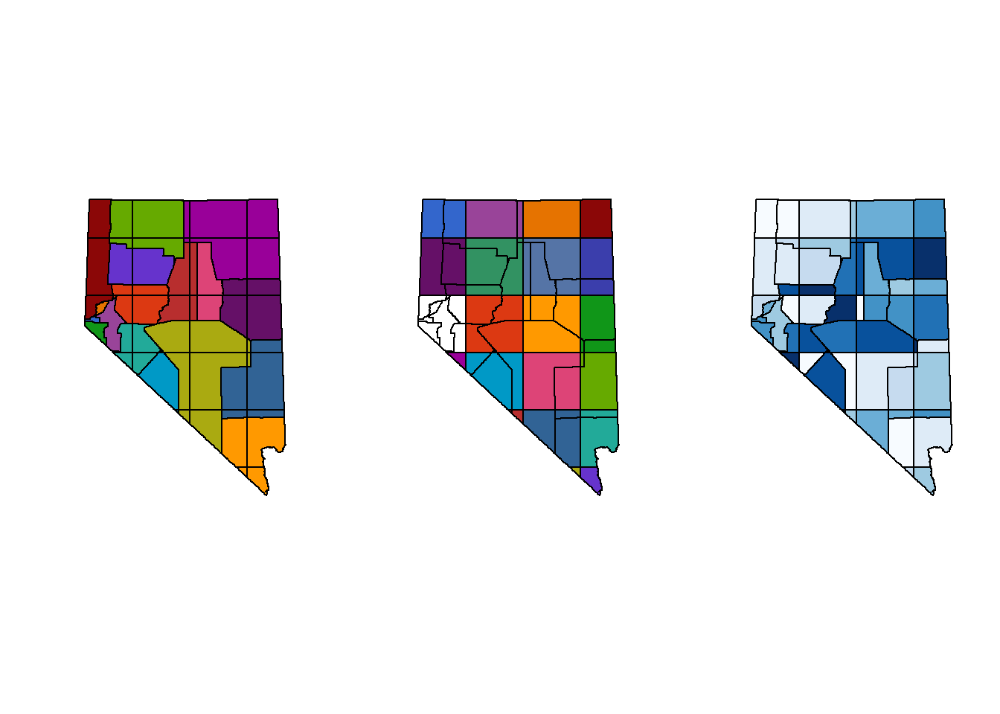
That was a lot of code! With some new concepts. Allow me to try and explain that in plain english!
rgeos doesn’t know which data to keep from each geometries @data slot. So it returns a concatenation of row names from the two geometries. This is the join part of the operation. We are still interested in the data from each of the parent geometries. In order to get that data from each geometry we can use strsplit to split the row names string. Which ever geometry you put first in the gIntersection function will be the first element, the second will be the second element, etc…
strsplit returns a list of n elements, where n is the number number of splits strsplit finds in the supplied string. In the example above I know that each row name is 1 word. So each list item has 2 elements. Instead of writing a for loop to extract each element from the list I used vapply (a function from the apply family of functions). This function iterates over a list or vector (iterable) object, performs the actions in the given function, and returns a vector (a real, useful stackoverflow answer to help you decide when to use which apply function). Another thing to remember is that almost everything in R is a function call. Even a generic 1 + 1 is really, +(1, 1)[[. As a quick example try the following in R.
# Everything in R is a function call, almost ----
## are the following equal?
1 + 1 == `+`(1, 1)## [1] TRUE## how about these?
county_name[[1]] == `[[`(county_name, 1)## [1] TRUEvapply is used again to return a vector of the area of each polygon. The area, county name, and study area are used to create a data.frame. Then a new SpatialPolygonsDataFrame is created for the intersection.
Union Polygons
Another common GIS task is to union sets of polygons into 1 bigger polygon. This is a common operation if you are trying to create a boundary to clip other data to (like when using the over function). Sometimes this operation is refered to as dissolving polygons.
# unioning polygons ----
## all of these function come from the rgeos package.
## select two counties to union
plot(counties[2:3, ])
## union them
nnv <- gUnion(counties[2, ], counties[3, ])
## plot the result
plot(nnv)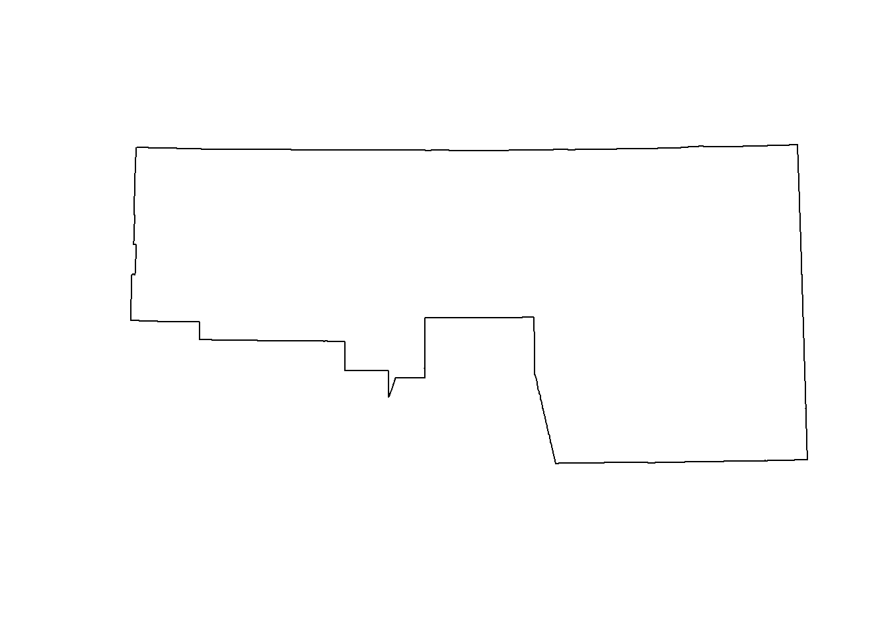
## inspect
str(nnv)## Formal class 'SpatialPolygons' [package "sp"] with 4 slots
## ..@ polygons :List of 1
## .. ..$ :Formal class 'Polygons' [package "sp"] with 5 slots
## .. .. .. ..@ Polygons :List of 1
## .. .. .. .. ..$ :Formal class 'Polygon' [package "sp"] with 5 slots
## .. .. .. .. .. .. ..@ labpt : num [1:2] 555073 4566314
## .. .. .. .. .. .. ..@ area : num 6.95e+10
## .. .. .. .. .. .. ..@ hole : logi FALSE
## .. .. .. .. .. .. ..@ ringDir: int 1
## .. .. .. .. .. .. ..@ coords : num [1:1988, 1:2] 498485 498772 498879 499233 499921 ...
## .. .. .. .. .. .. .. ..- attr(*, "dimnames")=List of 2
## .. .. .. .. .. .. .. .. ..$ : NULL
## .. .. .. .. .. .. .. .. ..$ : chr [1:2] "x" "y"
## .. .. .. ..@ plotOrder: int 1
## .. .. .. ..@ labpt : num [1:2] 555073 4566314
## .. .. .. ..@ ID : chr "1"
## .. .. .. ..@ area : num 6.95e+10
## ..@ plotOrder : int 1
## ..@ bbox : num [1:2, 1:2] 303940 4442372 751681 4653313
## .. ..- attr(*, "dimnames")=List of 2
## .. .. ..$ : chr [1:2] "x" "y"
## .. .. ..$ : chr [1:2] "min" "max"
## ..@ proj4string:Formal class 'CRS' [package "sp"] with 1 slot
## .. .. ..@ projargs: chr "+init=epsg:26911 +proj=utm +zone=11 +datum=NAD83 +units=m +no_defs +ellps=GRS80 +towgs84=0,0,0"rm(nnv)
# union all interior polygons ----
## we ccan do the same thing to get a the border of NV
## use a different function, but same idea
nv <- gUnaryUnion(counties)
plot(nv)
Reproject
In order to convert coordinates from one CRS to another we need to use the spTransform and provide the CRS we want to reproject the data into. Below we will reproject the data from NAD83 zone 11 to WGS84.
# spTranform ----
## reproject
wgs_pts <- spTransform(spdf_points, CRS('+init=epsg:4326'))
## inspect coordinates
wgs_pts@coords[1:5, 1:2]## x y
## [1,] -116.0879 36.28445
## [2,] -116.0898 36.28257
## [3,] -116.0910 36.28262
## [4,] -116.0957 36.28816
## [5,] -116.0975 36.28371## we can do this to polygons too
wgs_counties <- spTransform(counties, CRS('+init=epsg:4326'))
## then we can plot the two counties projection side by side
layout(matrix(1:2, nrow=1, ncol=2))
plot(counties, main = 'UTM NAD83 zone 11')
plot(wgs_counties, main = 'WGS84')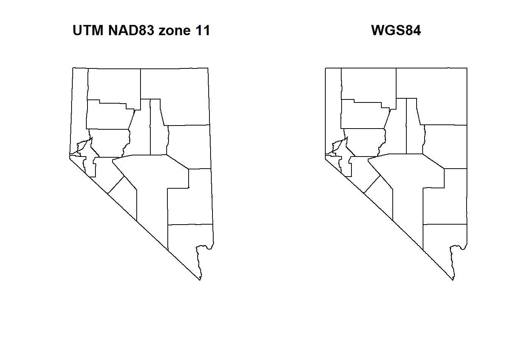
There are many, many different projection, as stated in the projections section above. We can choose to project our data however we want. Ultimately, the most important apsect of projections (and spatial data) is that we document the projection of our data. Without a projection we can’t plot our points onto earth. So please, do everyone a favor and document your data’s projection.
Below is a figure demonstrating how the shape of Nevada counties change depending on the projection
## we can do this with other reprojections as well so you can really tell a difference
layout(matrix(1:8, nrow = 2, ncol = 4))
plot(spTransform(counties, CRS('+proj=aea')), main = 'Albers Equal Area', sub = 'USGS')
plot(spTransform(counties, CRS('+proj=sinu')), main = 'Van Der Grinten')
plot(spTransform(counties, CRS('+proj=robin')), main = 'Robinson')
plot(spTransform(counties, CRS('+proj=isea')), main = 'Icosahedral Snyder', sub = 'Dymaxion, Butterfly not open source')
plot(spTransform(counties, CRS('+proj=wintri')), main = 'Winkel-Tripel', sub = 'National Geographic')
plot(spTransform(counties, CRS('+proj=goode')), main = 'Goode Homolosine')
plot(spTransform(counties, CRS('+proj=eqc')), main = 'Plate Carree')
plot(spTransform(counties, CRS('+proj=gall')), main = 'Gall-Peters')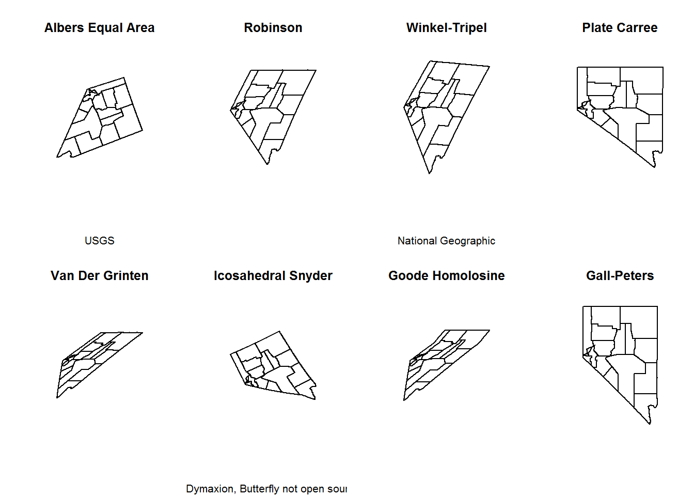
Raster Data
You will almost always read raster data from external files. There are many different file types to store raster data. The most common is probably .tif, or .geotiff. R has a native raster format that is very compact with an extension .grd & .gri (there are two files). We will use this format to read in raster data.
# working with raster data ----
## save some data for later
save(counties, spdf_points, wgs_pts, file = 'data/module2_6.RData')
## let's clean our workspace first
rm(bb, df_names, grd, intersect, new_polys, nnv, p_grd, rslt, tmp, wgs_counties, county_name, parea, study_area, counties, spdf_points, wgs_pts)## Warning in rm(bb, df_names, grd, intersect, new_polys, nnv, p_grd, rslt, :
## object 'nnv' not found## load a raster
dem <- raster('data/nv_dem_coarse.grd')
## check dem structure
str(dem)## Formal class 'RasterLayer' [package "raster"] with 12 slots
## ..@ file :Formal class '.RasterFile' [package "raster"] with 13 slots
## .. .. ..@ name : chr "E:\\GIT\\R-Bootcamp\\data\\nv_dem_coarse.grd"
## .. .. ..@ datanotation: chr "FLT4S"
## .. .. ..@ byteorder : Named chr "little"
## .. .. .. ..- attr(*, "names")= chr "value"
## .. .. ..@ nodatavalue : num -3.4e+38
## .. .. ..@ NAchanged : logi FALSE
## .. .. ..@ nbands : int 1
## .. .. ..@ bandorder : Named chr "BIL"
## .. .. .. ..- attr(*, "names")= chr "value"
## .. .. ..@ offset : int 0
## .. .. ..@ toptobottom : logi TRUE
## .. .. ..@ blockrows : int 0
## .. .. ..@ blockcols : int 0
## .. .. ..@ driver : chr "raster"
## .. .. ..@ open : logi FALSE
## ..@ data :Formal class '.SingleLayerData' [package "raster"] with 13 slots
## .. .. ..@ values : logi(0)
## .. .. ..@ offset : num 0
## .. .. ..@ gain : num 1
## .. .. ..@ inmemory : logi FALSE
## .. .. ..@ fromdisk : logi TRUE
## .. .. ..@ isfactor : logi FALSE
## .. .. ..@ attributes: list()
## .. .. ..@ haveminmax: logi TRUE
## .. .. ..@ min : num 147
## .. .. ..@ max : num 3576
## .. .. ..@ band : int 1
## .. .. ..@ unit : chr ""
## .. .. ..@ names : chr "w001001"
## ..@ legend :Formal class '.RasterLegend' [package "raster"] with 5 slots
## .. .. ..@ type : chr(0)
## .. .. ..@ values : logi(0)
## .. .. ..@ color : logi(0)
## .. .. ..@ names : logi(0)
## .. .. ..@ colortable: logi(0)
## ..@ title : chr(0)
## ..@ extent :Formal class 'Extent' [package "raster"] with 4 slots
## .. .. ..@ xmin: num 240120
## .. .. ..@ xmax: num 766120
## .. .. ..@ ymin: num 3875611
## .. .. ..@ ymax: num 4653611
## ..@ rotated : logi FALSE
## ..@ rotation:Formal class '.Rotation' [package "raster"] with 2 slots
## .. .. ..@ geotrans: num(0)
## .. .. ..@ transfun:function ()
## ..@ ncols : int 263
## ..@ nrows : int 389
## ..@ crs :Formal class 'CRS' [package "sp"] with 1 slot
## .. .. ..@ projargs: chr "+proj=utm +zone=11 +ellps=GRS80 +towgs84=0,0,0,0,0,0,0 +units=m +no_defs"
## ..@ history : list()
## ..@ z : list()## what is this?
dem@data@inmemory## [1] FALSEWow, that is a lot of data packed into a single class. Check that last command. What does that mean? Well, the Raster package cleverly keeps raster data saved in on disk, in a temporary file, rather than loading it into memory. This is a very nice feature because raster data can be huge. Don’t let anyone tell you differently, geographic data was the first big data!
How about plotting the data? We have two different methods, plot and image. The essentially do the same thing. Pick your favorite.
## plot raster
plot(dem)
## or
image(dem, asp = 1)
Let’s load a second raster. This next one represents major roads in Nevada (from the Census TIGER dataset). I’ve converted the data from a SpatialLinesDataFrame to a raster so that we can do some computations with it. The plot below looks like a road network. If you look closely down near Las Vegas you’ll see some green. Those cells are all the roads and highways lumped together in a single raster cell. The value of each cell in this data is the number of roads in that cell.
# load a second raster, distance to roads ----
road_rast <- raster('data/road_dist.grd')
## plot
plot(road_rast)
Check the projection on our Raster objects. The rasters we just loaded should be the same. What about when we compare it to nv? This is one of those instances, again, where the datasets are using the same coordinate reference system, however two different methods have been used to apply that coordinate reference system to the data. To prove they are the same coordinate reference system, we can plot the state border over the dem raster.
## use the raster::projection function
projection(road_rast)## [1] "+proj=utm +zone=11 +ellps=GRS80 +towgs84=0,0,0,0,0,0,0 +units=m +no_defs"projection(dem)## [1] "+proj=utm +zone=11 +ellps=GRS80 +towgs84=0,0,0,0,0,0,0 +units=m +no_defs"identicalCRS(road_rast, dem)## [1] TRUE## compare to nv SpatialPolygonsDataFrame
identicalCRS(dem, nv)## [1] FALSEprojection(nv)## [1] "+init=epsg:26911 +proj=utm +zone=11 +datum=NAD83 +units=m +no_defs +ellps=GRS80 +towgs84=0,0,0"## proof these are the same crs
plot(dem)
plot(nv, lwd = 3, add = T)
## coerce projection
dem@crs <- nv@proj4string
road_rast@crs <- nv@proj4string
identicalCRS(dem, nv)## [1] TRUE## check that we haven't screwed things up
plot(dem)
plot(nv, lwd = 3, add = T)
If we wanted to reproject the raster into a different coordinate reference system we would use the raster::projectRaster function. One of the parameters for this function is filename. This parameter allows you to give the function a filename so that data is saved onto disk as the operation progresses, rather than saving it in memory. Most of the time you should specify a filename when working with rasters.
Distance to Roads
Lets create a distance to roads raster from road_rast. We can later use this to perform spatial overlays, intersections, or joins. This should be a relatively quick operation. If you have an older computer with a slower processor and few RAM patience is required.
# create distance to roads ----
road_dist <- distance(road_rast, filename = "road_dist.grd", overwrite = T)
## cool, what does this look like?
plot(road_dist)
Very cool! This raster represents a continuous measure of distance to roads across the landscape. White pixels are directly on roads, so the cell value is 0. The darker the and greener the color, the further away from major roads that cell is. The units for each cell are meters. This isn’t as clean as the DEM we have loaded. The lower left corner is all in California, and because we didn’t include any California roads in the calculation of this raster, that data isn’t accurate. Instead of including California roads we will clip or mask this raster to the state border.
## mask raster to NV border. This will set all values outside NV to NA
nv_road_dist <- mask(road_dist, mask = nv, filename = 'nv_road_dist.grd', overwrite = T)If you need to overwrite a file that already exists on disk provide the overwrite = T parameter. Without this the operation will error out.
## plot our new raster, with nevada border
plot(nv_road_dist)
plot(nv, lwd = 3, add = T)
The appearance of the raster changed but the data is still the same. The change in appearance is due to the range of our cell values. Check for yourself. Removing all those extremely large values from California changes the distribution of our cell values.
## compare raster values
summary(road_dist)## Warning in .local(object, ...): summary is an estimate based on a sample of 1e+05 cells (97.75% of all cells)## layer
## Min. 0.000
## 1st Qu. 6324.555
## Median 16124.516
## 3rd Qu. 39395.430
## Max. 323932.094
## NA's 0.000summary(nv_road_dist)## Warning in sampleInt(length(x), size): size changed to n because it cannot be larger than n when replace is FALSE
## Warning in sampleInt(length(x), size): summary is an estimate based on a sample of 1e+05 cells (97.75% of all cells)## layer
## Min. 0.00
## 1st Qu. 4000.00
## Median 10000.00
## 3rd Qu. 20000.00
## Max. 64124.88
## NA's 0.00Overlay Operations
We can perform overlay operations between vector and raster geometries, similar to what we did with two raster geometries. When interacting with raster-vector geometries this is referred to as extraction. The easiest way for me to think about this is with point data. We want to provide additional attribute data to the points by extracting the cell value from a raster at that points’ position.
# raster extraction ----
## global env setup
rm(road_dist, road_rast)
load('data/module2_3.RData')
## the following command might not do anything, however there may be some additional data in the .RData file that we don't need
rm(counties, wgs_pts)Before we do anything else, lets visualize what we are trying to do. In the figure below we have several points ontop of the elevation DEM for Humboldt county. For each point on the map we want to get the value of the raster cell underneath that point.
## create an extent object to limit the size of our raster plot
## wubset the points so we can see them
bounds <- extent(spdf_points[spdf_points$county == 'Humboldt', ])
## extend the extent object so all the points fit on the map
plot(dem, ext = extend(bounds, 10000))
points(spdf_points[spdf_points$county == 'Humboldt', ])
Now let’s do the extraction.
## extract values from the dem
## this returns a vector of length = nrow(spdf_points)
elevation <- raster::extract(dem, spdf_points)
summary(elevation)## Min. 1st Qu. Median Mean 3rd Qu. Max. NA's
## 154.2 1242.4 1400.6 1353.8 1563.9 2959.7 31## this can be combined with our data
## and yes, this can be done in one step instead of 2
spdf_points$elevation <- elevationOnce the extraction is complete, and we add this column to our data we can do some data exploration. There are some NA values, what is that about? We can also plot a histogram and see the distribution of elevations for our data.
## and now, we can figure out the distribution of elevations in our data!
hist(spdf_points$elevation * 3.28, main = 'Distribution of Elevation', xlab = 'Elevation (ft)', freq = F)
## what about those NAs?
na_points <- spdf_points[is.na(spdf_points$elevation), ]
## honestly, this 2000 number is purely experimental,
## change values till you get what you want on the map
bounds <- extend(extent(na_points), 2000)
## plot the map, zoom in on these points in the map
plot(dem, ext = bounds)
points(na_points)
plot(nv, add = T)
This is due to the fact that a raster is a grid of rectangles (squares) and we can’t perfectly mimic every vector shape. A solution is to use smaller resolutions for rasters, or buffer the state border to include cells outside the state.
Interactive Maps
I’ll often hear that many people don’t use R as a GIS because it is hard to add basemaps. Well, some wonderful R user decided to write a library that allows for interactive mapping in R. Underneath the hood this library is calling a JavaScript library called leaflet.
load("data/module2_6.RData")
library(leaflet)
# interactive mapping ----
leaflet::leaflet(wgs_pts[1:100, ]) %>%
addTiles() %>%
addCircleMarkers(radius = 5)We can change the basemap too.
## leaflet provider tiles
leaflet::leaflet(wgs_pts[1:100, ]) %>%
addProviderTiles(providers$Esri.WorldTopoMap) %>%
addCircleMarkers(radius = 5)And popups!
## and popups
leaflet::leaflet(wgs_pts[1:100, ]) %>%
addTiles() %>%
addCircleMarkers(radius = 5, popup = paste(wgs_pts$species[1:100]))Challenge: Spatial Lines
Lines are very similar to polygons. See if you can load a shapefile of lines and plot it over the counties.
- Read in the roads shapefile
- reproject to match the counties CRS
- Plot counties and roads
- Plot roads based on road type
- Intersect counties and roads
- Plot some intersections
###########
# CHALLENGE PROBLEMS
# SpatialLines solution ----
## 1. read in data
### HINT: use readshapefile
### data to use:
#### data/roads/roads.shp
#### data/counties/counties.shp
## 2. reproject
### HINT: check counties projection
## 3. plot
## 4. plot roads, style based on road type
## 5. intersect counties and roads
## 6. plot some of the intersections
## etc ...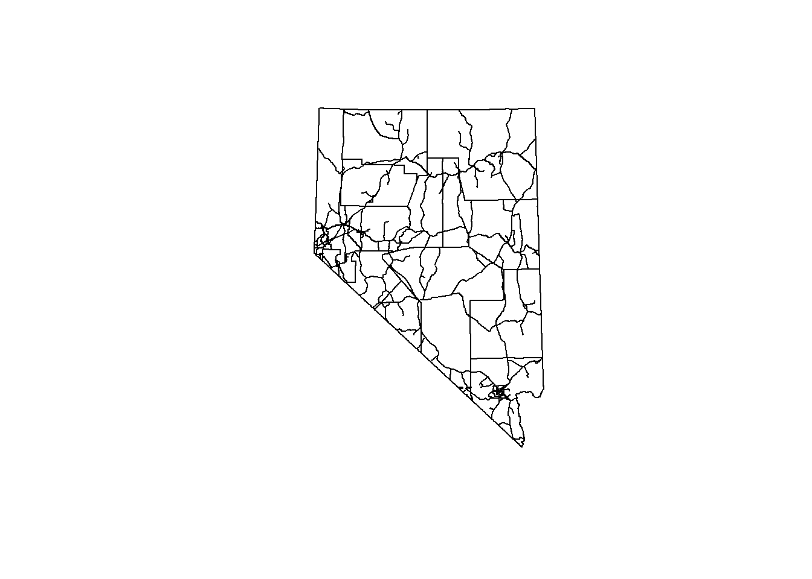
The
rasteranddplyrlibraries each have a function calledselect. I prefer to loaddplyrfirst and have therasterlibrary mask theselectfunction in thedplyrlibrary. In order to call theselectfunction in therasterlibrary we need to explicitly reference the library we want to use with two colons:dplyr::select. When using double colons the libraries namespace (list of functions, variable, etc.) is loaded, but not attached to the session. This allows us to call function from libraries we haven’t explicitly loaded withlibrary()orrequrie()function. I have a tendancy to (over)use this method. It is very helpful when writing your own functions and libraries as those functions will not throw errors about a library not being loaded.↩The European Petroleum Survey Group maintains a list of IDs to all the projection systems. These are a nice shorthand for create coordinate reference strings in R. epsg.io is a great interactive site to discover EPSG IDs.↩